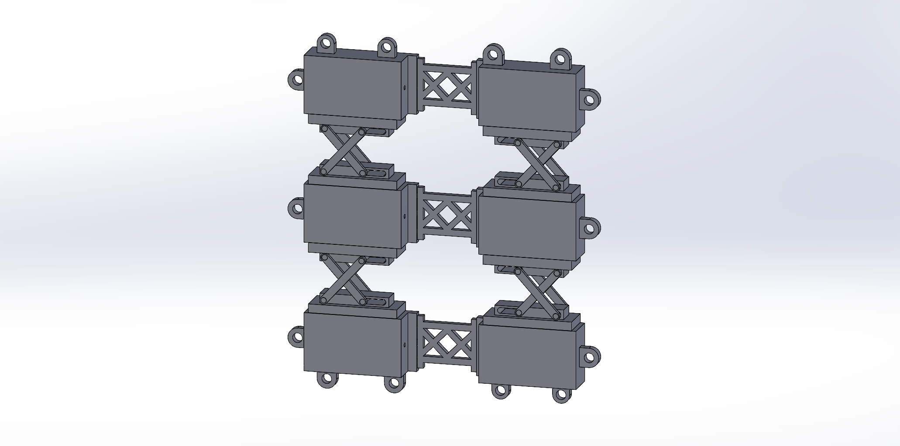
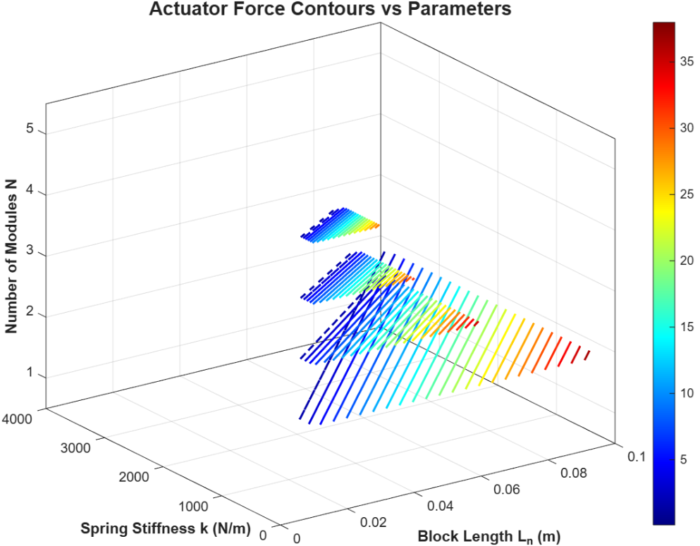
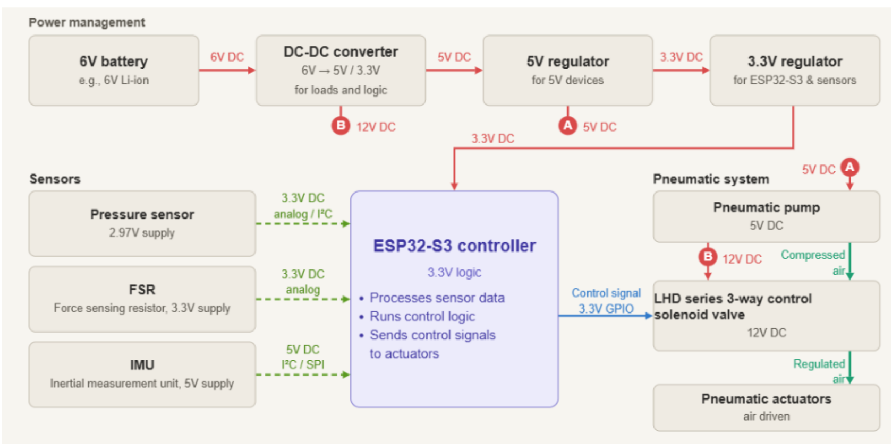
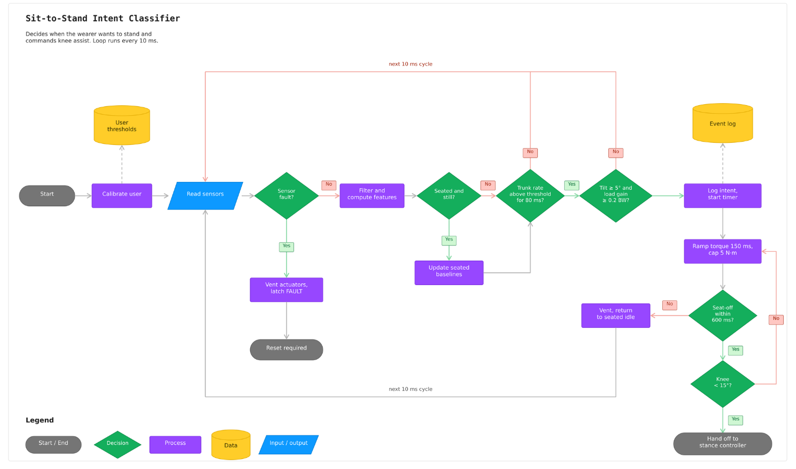

Optimal design
Block length: 0.095 m
Block count: 2
Peak torque: 1.00 N·m
Assistance: 11.86% of 16 N·m
Analysis
A sealed pouch with a scissor-mechanism core, sized so that it assists the knee during sit-to-stand.
The full actuator is built from six scissor-mechanism modules in a 3 by 2 array, joined by cross-braced links.

The pouch is made of TPU-coated nylon, with heat-welded tabs for reinforcement.
| Parameter | Value | Meaning |
|---|---|---|
| W | 0.10 m | Pouch width |
| H | 0.015 m | Pouch and rigid block height |
| L0 | 0.20 m | Initial pouch length before compression |
| x0 | 0.010 m | Initial spring length |
| xf | 0.005 m | Final spring length after compression |
| Ln | 0.01 to 0.10 m | Length of each rigid block (search range) |
| N | 2 to 5 | Number of repeating rigid blocks (search range) |
| k | 1 to 10,000 N/m | Spring constant (search range) |
| Patm | 101,325 Pa | Atmospheric pressure |
| Pmax vac | 40,000 Pa | Maximum gauge vacuum |
| r | 0.05 m | Knee moment arm |
| T | 16 N·m | Average knee torque for a person with SMA |
compression = x0 − xfbagArea = W × HP_init = P_atm − P_maxvacL0 ≥ (Ln × N) + (x0 × (N − 1))VB = (W/3) × H × Ln, total VBtotal = 2 × VB × NV_bag,init = (L0 × W × H) − VBtotalP_eq = (P_atm × V_bag,init + P_init × VBtotal) / (V_bag,init + VBtotal)P_gauge = P_atm − P_eq, pressureForce = P_gauge × bagAreaspringForce = k × compression × 2 × (N − 1)totalForce = pressureForce − springForce, torque = totalForce × rA MATLAB script searched block lengths, stiffness values, and block counts that fit within the initial pouch length, and kept the combination with the highest torque.
Block length: 0.095 m
Block count: 2
Peak torque: 1.00 N·m
Assistance: 11.86% of 16 N·m
Initial volume (V0): 0.000300 m³
Compressed volume (Vc): 0.000293 m³
Initial air volume: 0.000110 m³
Rigid block volume: 0.000190 m³
The MATLAB sweep below shows how actuator force changes with block length, spring stiffness, and number of modules. Colour indicates force magnitude. The optimal design used a 0.095 m block length and 2 modules.

An ESP32-S3 microcontroller reads pressure, force, and motion sensors, and drives a pneumatic pump and solenoid valve to fill and vent the actuator.

